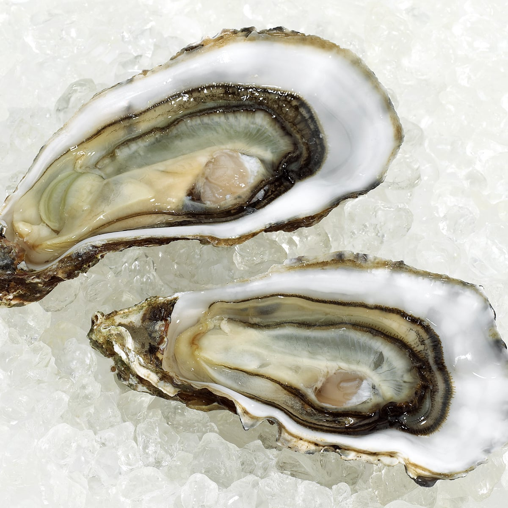

Home
Oysters

Delicious natural oysters
Ingredients
1 dozen fresh oysters
1 whole lemon
Preparation
Wash shells of oysters thoroughly and open with a butter knife.
Once open, drizzle fresh lemon juice over the oysters and serve.